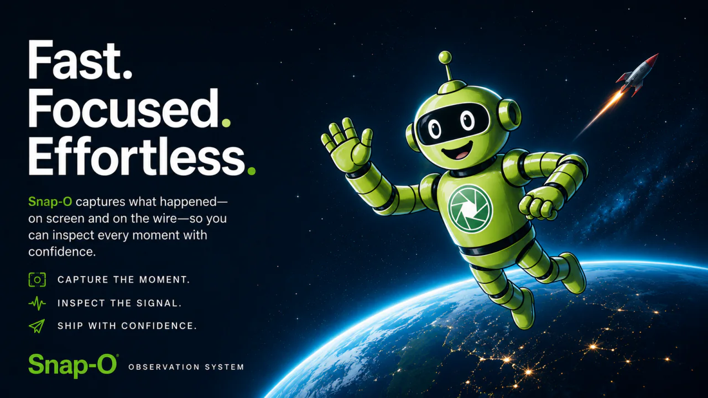

Snap-O
A fast, tidy macOS app for Android developers: capture screenshots and recordings, and inspect network traffic from Android devices and emulators.
Requires macOS 15+ and Android Platform Tools (adb).

Network Inspector
Inspect HTTP and HTTPS requests, responses, JSON payloads, Server-Sent Events, and WebSocket messages from Android apps.
Set up Network InspectorScreen capture
Capture, review, and share without first saving files to disk. Recordings open for immediate playback and frame-by-frame inspection, then simply drag and drop screenshots or clips into pull requests, chats, or docs.